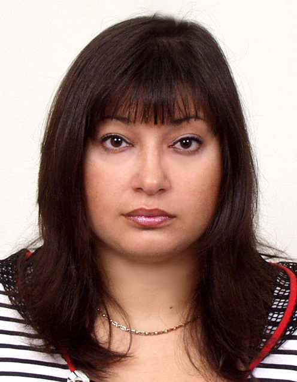

Преподаватель / Разработчик

Ревенчук Илона Анатольевна
Должность - доцент кафедры Программной инженерии.
Звание - доцент.
Научная степень - кандидат технических наук.
Стаж преподавания - 12 лет.
Научные публикации в данной предметной области.
1.Дудар З.В., Ревенчук І.А. Дистанційна форма післядипломної освіти в межах міжуніверситетських консорціумов// Міжнар. Науково - практ. конф. «Перспективи вищої освіти: роль міжуніверситетських консорціумів (НЕР 04)».- Миколаїв.-2004.- С.21-24.
2.Ревенчук І.А. Структура специализированного мультипроцессорного вычислителя для создания иерархической сети обмена информацией// Сб. тезисов докладов по матер. 9-ой Междунар. научн. конф. «Теория и техника передачи приема и обработки информации».- Харьков.-2003.- С. 307-308.
3.Bondarenko M.F., Bavykin V.N., Chetverikov G.G., Revenchuk I.A. Formalization principles k-digital structure of linguistic systems an artificial intelligence// Тез. Докл. 6th International conference "MIXED DESIGN OF INTEGRATED CIRCUITS AND SYSTEMS (MIXDES99)".-Krakow, Poland, 1999.- S.131-133
Научные интересы. Модификация вычислительных процедур средствами алгебры конечных предикатов. Практические аспекты теории статических пространственных к-значных структур в методологии проектирования эргатических систем. Построение к-значных структур языковых систем искусственного интеллекта. Web - дизайн. Интерьер - дизайн. Интернет - технологии.